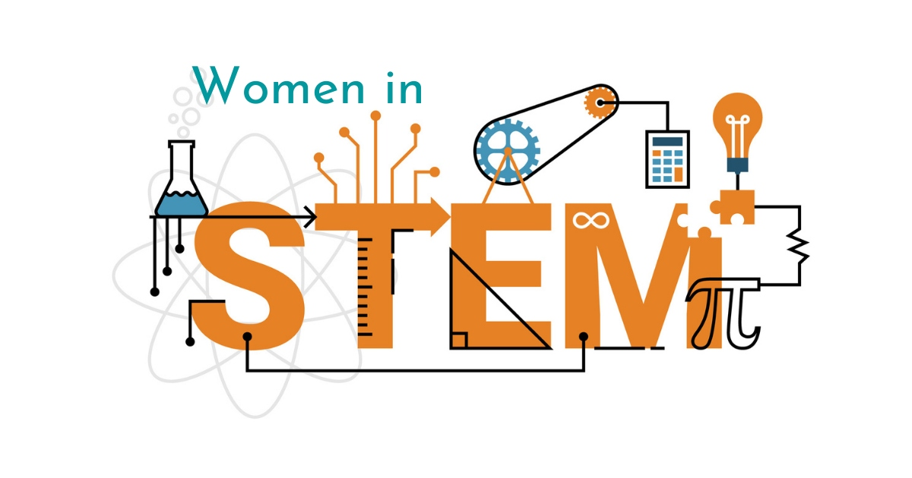
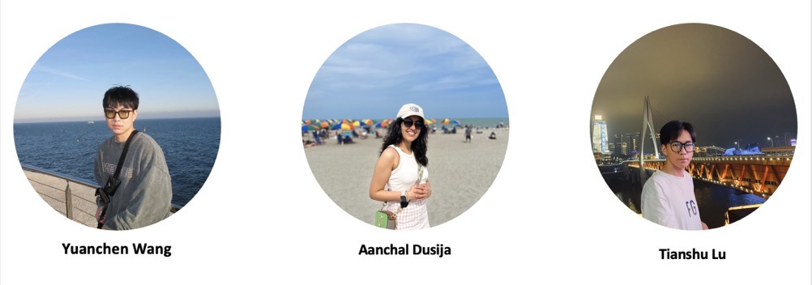

Analyzing Gender Representation in STEM Fields through Reddit Data

Background
The background of this project is rooted in the historical context of gender representation within the fields of Science, Technology, Engineering, and Mathematics (STEM). These fields have traditionally been dominated by men, leading to significant underrepresentation of women and other gender minorities. This gender imbalance has multifaceted implications, ranging from the workplace environment to the types of research and innovation pursued. Here’s an elaboration on this context:
Historical Underrepresentation: Traditionally, STEM fields have seen a lower participation rate of women and gender minorities. This can be attributed to various factors including societal stereotypes, lack of role models, and systemic barriers within education and employment in these fields. The historical context sets the stage for understanding current challenges and the need for change.
Changing Perspectives and Initiatives: In recent years, there has been a noticeable shift towards recognizing and addressing the gender gap in STEM. This change is driven by both grassroots advocacy and institutional initiatives. Efforts include promoting STEM education among girls, implementing policies for gender equality in workplaces, and increasing the visibility of women and gender minorities in these fields.
Role of Online Platforms in Public Discourse: Platforms like Reddit have become crucial in understanding public discourse on these issues. They offer unfiltered insights into people’s opinions, experiences, and attitudes. The anonymity and diversity of online platforms allow for a wide range of perspectives, including those from individuals directly involved in STEM fields and those observing from the outside.
Revealing Challenges: Online discussions often highlight the ongoing challenges faced by women and gender minorities in STEM. These include experiences of bias and discrimination, difficulties in career advancement, and challenges in achieving work-life balance. Such candid conversations provide real-life examples of the barriers that still exist despite the progress made.
Tracking Progress and Shifts in Attitudes: These platforms also serve as a barometer for measuring shifts in societal attitudes towards gender diversity in STEM. Positive stories of success and support, debates on policies, and discussions about the importance of diversity in driving innovation are all indicators of changing perceptions.
Influencing Policy and Cultural Changes: The discourse on platforms like Reddit not only reflects societal attitudes but can also influence them. It can inform policymakers, educators, and industry leaders about the ground realities, helping shape more effective and inclusive policies and practices.
Objective
The objective of this project is multi-dimensional, focusing on a comprehensive analysis of discussions about women and gender minorities in STEM fields, specifically within the context of Reddit. The core goals and areas of exploration include:
Understanding Representation: One of the primary objectives is to assess how women and gender minorities are represented in discussions within STEM-related subreddits. This involves examining the frequency and context in which these groups are mentioned and discussed. The aim is to identify whether their representation is proportionate and respectful, and to uncover any patterns of underrepresentation or misrepresentation.
Identifying Challenges: An important aspect of the project is to uncover the specific challenges faced by women and gender minorities in STEM as voiced by the Reddit community. This may include issues such as gender bias in the workplace, barriers to career advancement, work-life balance concerns, and the experiences of discrimination or harassment. Understanding these challenges is crucial for developing strategies to address them.
Analyzing Perceptions and Sentiments: The project seeks to analyze the overall sentiment of discussions related to women and gender minorities in STEM. This involves using NLP techniques to gauge whether the discourse is predominantly positive, negative, or neutral. By doing so, we can gain insights into the general perceptions of these groups within the STEM community and identify areas where attitudes may need to be shifted.
Evaluating Community Engagement: By examining the level and nature of engagement in these discussions (such as the frequency of posts, comments, and the extent of user participation), we aim to understand how actively the Reddit community engages with issues related to gender in STEM. This can indicate the level of interest and concern among community members about these topics.
Contributing to Broader Understanding of Gender Dynamics: The findings from this analysis will contribute to a broader understanding of gender dynamics in STEM fields. By providing a detailed picture of the current state of discussions around women and gender minorities in STEM, the project can inform academics, industry professionals, and policymakers about the prevailing attitudes and challenges. This knowledge is essential for shaping policies, initiatives, and educational programs aimed at fostering diversity and inclusivity in STEM fields.
Informing Future Research and Action: The insights gained from this study can help inform future research directions and actions by highlighting less explored areas or new emerging themes. It can guide further academic research, advocacy work, and policy-making to support and promote gender equality in STEM.
Data Collection
The process of compiling our dataset from Reddit was conducted with meticulous attention to detail and a targeted focus. Our objective was to gather a comprehensive and relevant collection of data that specifically reflects the experiences, discussions, and perspectives of women and gender minorities in STEM fields. To achieve this, we concentrated on a selection of subreddits known for their active engagement in these topics. These subreddits include, "xxstem", "LadiesofScience", "Feminism", “womenEngineers”, “AskFeminists” and “AskWomen”
Each of these subreddits offers a unique window into the varied aspects of women and gender minorities in STEM.
xxstem: This subreddit is specifically dedicated to discussions about women and non-binary individuals in STEM fields. It’s a space for sharing experiences, challenges, and accomplishments. The content often includes personal stories, advice on navigating STEM careers, and discussions on how to improve gender diversity and inclusivity in these fields.
LadiesofScience: A community focused on the professional and personal lives of women scientists, engineers, and researchers. It serves as a platform for support, sharing experiences, and discussing the specific challenges women face in scientific careers. Topics range from career development to balancing work-life responsibilities and addressing gender bias in science.
Feminism: While covering a broader range of topics related to gender equality, this subreddit often includes discussions relevant to women in STEM. It’s a space for debating systemic issues, advocating for policy changes, and sharing news related to women’s rights and gender equality, with a significant portion dedicated to the challenges and progress in STEM fields.
womenEngineers: Focused on women in engineering, this subreddit addresses the unique experiences of women in this specific STEM field. It’s a community for sharing career advice, discussing the workplace environment, and highlighting both the struggles and successes of women engineers.
AskFeminists: This subreddit provides a platform for asking questions about feminist perspectives and theories. When it comes to STEM, it offers insights into feminist views on issues like gender disparity in STEM education and employment, the impact of gender bias in scientific research, and strategies for achieving gender equality in STEM fields.
AskWomen: A broader forum that covers a wide range of topics from the perspective of women, including those related to STEM. This subreddit often features personal anecdotes about working in STEM, discussions on balancing career and personal life, and opinions on the culture within STEM fields. It provides a diverse range of viewpoints on the everyday experiences of women in various aspects of life, including their roles in STEM.
Significance
The significance of this project extends beyond mere data collection and analysis; it represents a crucial step towards understanding and addressing the complex issues surrounding gender representation in STEM fields. By analyzing discussions and sentiments expressed on social media, particularly Reddit, we are tapping into a rich, unfiltered source of public opinion and personal experience. This approach offers several key benefits:
Real-Time Insights into Prevailing Attitudes: Social media is a dynamic platform where users freely express their views, experiences, and concerns. Analyzing content from Reddit allows us to capture the current sentiment and narratives surrounding women and gender minorities in STEM. This real-time insight is invaluable for understanding the evolving landscape of gender representation in these fields.
Informed Decision-Making for Stakeholders: The findings from this study can serve as an evidence-based guide for educators, policymakers, and advocates working towards gender equality in STEM. By understanding the challenges, successes, and general sentiment expressed by the community, these stakeholders can develop more effective strategies and policies. For instance, educational institutions can use these insights to design curricula and support systems that are more inclusive and sensitive to the needs of underrepresented groups.
Empowering Voices of Women and Gender Minorities: The project gives a platform to the voices of women and gender minorities in STEM, often underrepresented in mainstream discussions. By bringing these narratives to the forefront, the project not only highlights their experiences but also fosters a greater understanding of the unique challenges they face. This can lead to a more empathetic and supportive environment in STEM fields.
Guiding Efforts to Promote Gender Diversity: The analysis can identify specific areas where gender diversity is lacking and reveal underlying causes, such as biases or systemic barriers. This knowledge is crucial for designing targeted interventions to promote inclusivity and diversity in STEM fields.
Enhancing Community Engagement and Support: By understanding the dynamics of online communities discussing STEM and gender issues, advocates and educators can engage more effectively with these communities. This engagement can foster a supportive environment, encouraging more women and gender minorities to pursue and sustain careers in STEM.
Benchmarking Progress Over Time: The project can serve as a benchmark for measuring progress in gender representation in STEM. By regularly analyzing these online discussions, stakeholders can track changes in sentiment and representation over time, gaining a clearer picture of the impact of their efforts and adjusting strategies as needed.
.jpeg)
Business Goals
Topic 1: Discussion Volume Over Time
Business Goal: Track the level of engagement over time in discussions related to women’s issues in STEM on the selected subreddits.
Technical Proposal: Extract timestamp data from posts and comments to create a time series analysis of discussion volume. Visualize trends using line graphs to identify any temporal patterns, spikes, or declines in activity, which may correlate with external events or online campaigns.
Topic 2: Subreddit Engagement Comparison
Business Goal: Compare the level of activity and engagement across various subreddits to understand where the most vibrant discussions on women’s issues in STEM are taking place.
Technical Proposal: Aggregate the number of posts, comments, and upvotes across the different subreddits. Use bar charts to visualize the distribution of engagement. Perform statistical analysis to see if the differences in engagement levels are significant.
Topic 3: Topic Popularity
Business Goal: Identify which topics within women’s issues in STEM are most popular and what the sentiment is towards these topics.
Technical Proposal: Use NLP to categorize comments into topics and then count the number of comments per topic. Combine this with sentiment analysis to assess the overall sentiment for each topic. Visualize the popularity and sentiment using a word cloud, where the size of the text represents the frequency of the popular words in the comments.
Topic 4: Identifying Core Contributors in STEM Discussions
Business Goal: Uncover the most active and influential authors contributing to discussions on women’s issues in STEM, to foster community engagement and recognize key voices.
Technical Proposal: Merge the datasets for comments and submissions and use data aggregation techniques to count the number of contributions per author. Identify common authors between the two datasets to ascertain individuals who are both starting conversations and engaging with others’ content. Apply data visualization tools to display the distribution of contributions and highlight the top contributors. Analyze the patterns of these core contributors to understand their impact on the community.
Topic 5: Analysis of Peak Activity Times
Business Goal: Identify the times when users are most active in STEM-related discussions to optimize the scheduling of content and moderation resources.
Technical Proposal: Use time series analysis to determine peak activity periods by analyzing post and comment timestamps. Perform ANOVA tests to find statistically significant differences in activity levels across different times.
Topic 6: Sentiment Analysis on Comments
Business Goal: Gauge the general sentiment (positive, negative, neutral) of the community towards women’s issues in STEM.
Technical Proposal: Apply sentiment analysis algorithms to the body of comments. Aggregate sentiment scores by subreddit and over time to see how community sentiment varies across different forums and temporal dimensions.
Topic 7: Content Effectiveness by Authorship
Business Goal: Understand the impact of anonymous versus known user contributions on the discussion effectiveness and engagement.
Technical Proposal: Compare engagement metrics for posts authored by [deleted] users against those by users with known handles. Use statistical analysis to measure the difference in engagement.
Topic 8: Common Challenges Highlighted
Business Goal: Identify the most common challenges faced by women in STEM as discussed in these subreddits.
Technical Proposal: Employ topic modeling and keyword extraction to pinpoint recurring themes of challenges. Use clustering algorithms to group similar issues and identify major categories.
Topic 9: Impact of Moderation on Discussion Quality
Business Goal: Assess the impact of post removal (moderation) on the quality and direction of discussions.
Technical Proposal: Analyze the correlation between posts marked [removed] or [deleted] and the subsequent number of comments. Use NLP to compare the content of moderated versus unmoderated posts.
Topic 10: Machine Learning to Predict Discussion Popularity
Business Goal: Predict the potential popularity of a discussion topic based on initial engagement and content features.
Technical Proposal: Build a machine learning model using features like time of post, initial engagement, author’s historical engagement, post length, and keyword analysis to predict future engagement. Use regression models for numerical engagement prediction or classification models for high/low engagement.
Project made by
